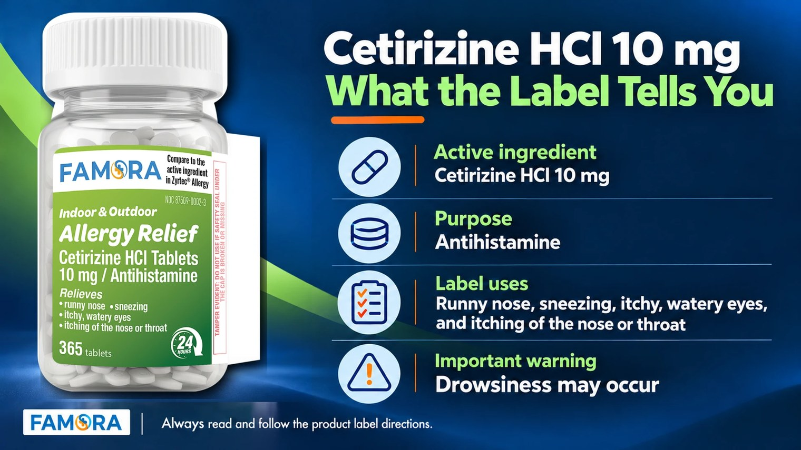

“HCl” may look like secret pharmacy code, but the meaning is simpler than it appears.
Cetirizine HCl 10 mg is an over-the-counter antihistamine commonly found in allergy relief tablets. On the Drug Facts label, “cetirizine HCl 10 mg” identifies the active ingredient and the amount contained in each tablet.
The label lists its purpose as an antihistamine and describes temporary relief of symptoms associated with hay fever or other upper respiratory allergies, including runny nose, sneezing, itchy or watery eyes, and itching of the nose or throat.
That is the short answer. But before choosing or using cetirizine 10 mg tablets, it is also important to understand the warnings, possible drowsiness, age guidance, and other information printed on the label.
Cetirizine HCl 10 mg at a Glance
| Label detail | What it means in plain English |
|---|---|
| Active ingredient | Cetirizine HCl 10 mg in each tablet |
| Purpose | Antihistamine |
| Common label uses | Temporary relief of runny nose, sneezing, itchy or watery eyes, and itching of the nose or throat due to allergies |
| Drowsiness warning | Drowsiness may occur |
| Important precautions | Review alcohol, sedative, driving, health-condition, and age guidance |
| What to do before use | Read and follow the complete Drug Facts label |
What Is Cetirizine HCl?
Cetirizine HCl is an antihistamine active ingredient used in many over-the-counter allergy relief products.
Antihistamines are a category of medicine used to help relieve certain allergy symptoms. Histamine is involved in the body’s response to allergens, and antihistamine products are designed to reduce specific symptoms associated with that response.
When comparing cetirizine allergy relief tablets, start with the active ingredient rather than the color of the package or the brand name. Two products can look different while containing the same active ingredient and strength. They can also look similar while containing entirely different ingredients.
This is why the active ingredient section is one of the most important parts of an OTC label.
What Does HCl Mean in Cetirizine?
In “cetirizine HCl,” HCl means hydrochloride. It refers to the chemical salt form used for the ingredient.
It does not mean that the product contains a second allergy medicine, and it is not an additional strength measurement. The important consumer-facing information is the complete active ingredient statement printed on the label: cetirizine HCl 10 mg per tablet.
In everyday product descriptions, you may see “cetirizine,” “cetirizine HCl,” and “cetirizine hydrochloride.” The Drug Facts panel provides the exact ingredient name and strength for the specific product.
What Is Cetirizine Used For?
According to standard OTC cetirizine labels, cetirizine HCl 10 mg is used to temporarily relieve certain symptoms caused by hay fever or other upper respiratory allergies:
- Runny nose
- Sneezing
- Itchy, watery eyes
- Itching of the nose or throat
These are the symptoms listed on the label. Cetirizine should not automatically be treated as a solution for every type of congestion, cough, cold, or flu symptom.
Start with the symptom information on the package and confirm that the active ingredient and listed uses match what you are looking for. If you are uncertain about the cause of a symptom or whether a product is appropriate, ask a healthcare professional.
What Does “Antihistamine” Mean?
“Antihistamine” is the purpose category shown on the Drug Facts label.
This term helps shoppers understand what type of OTC medicine they are reviewing. It is useful when comparing cetirizine HCl 10 mg with other products because not every allergy product contains the same type of active ingredient.
Even two antihistamines may have different strengths, warnings, directions, age guidance, and possible effects. They should not be treated as interchangeable based only on the word “allergy” appearing on the package.
If you are comparing common allergy ingredients, Famora’s guide to diphenhydramine vs. cetirizine explains some of the label details shoppers should review.
How to Read a Cetirizine Drug Facts Label
A Drug Facts label is designed to organize the most important product information into predictable sections.
| Drug Facts section | What to review |
|---|---|
| Active ingredient | The ingredient and amount in each tablet |
| Purpose | The product category, such as antihistamine |
| Uses | The symptoms the product is labeled to temporarily relieve |
| Warnings | When not to use it and when to ask a professional |
| Directions | Instructions and age-specific guidance |
| Other information | Storage and additional product details |
| Inactive ingredients | Ingredients that are not responsible for the intended effect |
This structure makes it easier to compare cetirizine 10 mg tablets across different brands and package sizes.
A larger count can be useful for some households, but the count should come after confirming the ingredient, strength, warnings, and directions.

Does Cetirizine Make You Drowsy?
It can. The OTC label states that drowsiness may occur.
That wording matters. Cetirizine is sometimes discussed as a less-drowsy allergy option, but consumers should not interpret that as a guarantee that drowsiness will never happen.
The label also warns that alcoholic drinks should be avoided and that alcohol, sedatives, and tranquilizers may increase drowsiness. It advises caution when driving a motor vehicle or operating machinery.
If you are taking sedatives or tranquilizers, the label instructs you to ask a doctor or pharmacist before use.
The safest approach is to read the warning section on the specific product you have rather than relying on general descriptions such as “daytime” or “non-drowsy.” You can review these points in the official DailyMed cetirizine HCl 10 mg Drug Facts information.
What Cetirizine Warnings Deserve Attention?
The warning section should never be treated as secondary information.
Cetirizine HCl 10 mg labels generally tell consumers not to use the product if they have previously experienced an allergic reaction to the product, its ingredients, or an antihistamine containing hydroxyzine.
The label also directs consumers to ask a doctor before use if they have liver or kidney disease. A doctor should determine whether different instructions are needed.
Other important warning areas include:
- Possible drowsiness
- Alcoholic drinks
- Sedatives or tranquilizers
- Driving or operating machinery
- Pregnancy or breastfeeding
- Allergic reactions
- Keeping the product out of reach of children
- What to do in case of an overdose
This is a summary, not a replacement for the package. Always review the complete label on the product you intend to use.
Check the Age Guidance and Directions
Age guidance appears in the directions section because the same instructions may not apply to every person.
Do not make a decision based only on the “10 mg” printed on the front of the package. Review the directions for the person’s age and any additional guidance for older adults, children, or people with liver or kidney disease.
Do not use an adult product as a substitute for a child-specific recommendation. If the directions tell you to ask a doctor—or if you are unsure—speak with a healthcare professional before use.
Cetirizine 10 mg Tablets: Ingredient First, Count Second
After confirming the active ingredient, strength, uses, directions, and warnings, shoppers can compare practical product details such as tablet count.
Famora 24-Hour Allergy Relief contains cetirizine HCl 10 mg and comes in a 365-tablet format. The high-count bottle is intended for households looking for a practical allergy relief option to keep stocked.
However, a higher count does not make a product appropriate for every person. Label fit comes first. Count and convenience come second.
Frequently Asked Questions
Cetirizine HCl 10 mg is an antihistamine active ingredient found in OTC allergy relief tablets. The Drug Facts label lists the ingredient amount, purpose, uses, warnings, and directions.
OTC cetirizine labels list temporary relief of allergy symptoms such as runny nose, sneezing, itchy or watery eyes, and itching of the nose or throat.
Drowsiness may occur. The label also warns that alcohol, sedatives, and tranquilizers may increase drowsiness and advises caution when driving or operating machinery.
HCl means hydrochloride, the chemical salt form of cetirizine used in the product. It is not a second active ingredient. Check the Drug Facts panel for the complete ingredient name and strength.
Review the active ingredient, uses, warnings, directions, age guidance, possible drowsiness, health-condition precautions, and interactions described on the product label. Ask a healthcare professional if you are uncertain.